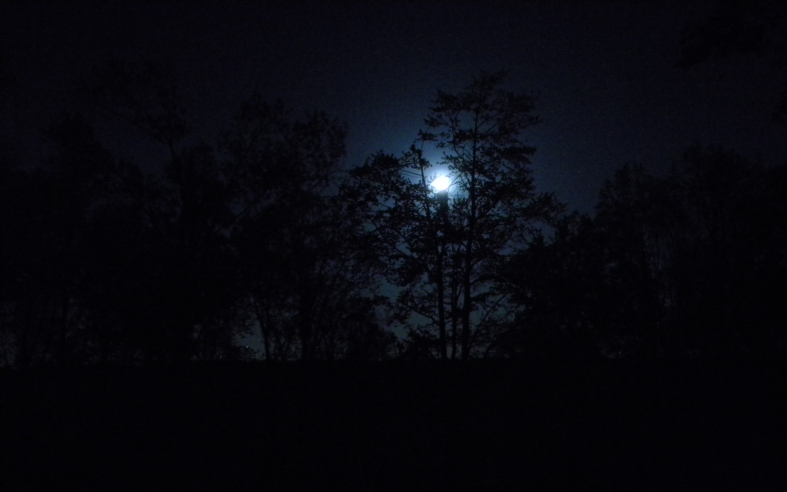

Cae la noche

Todo empieza a oscurecer, esperas un poco mas hasta que oyes como se acomodan los tipos.
Al esperar una hora empiezas a desatarte, el nudo no estaba tan fijo.
Te quitas la venda y caminas lentamente para no hacer ruido, poco a
poco vas caminando un poco mas rapido para que nadie sepa que estas ahi.
Ves que algo se mueve entre los arboles, no puedes escucharlo, pero parece una
especie de pajaro gigante, tras analizarlo te das cuenta que es un Buo. Este se
postra sobre la rama de un arbol y se te queda viendo fijamente, es entonces donde
empieza a emitir un tipo de grito agudo, parecido al de un humano. El sonido alerta
a los sujetos, estos ven que no estas, empiezan a buscarte pero empiezas a correr
Escuchas que se estan acercando rapidamente, y buscas un lugar a donde ir, ves una
carretera a tu lado derecho, y un arbol, parece ser una Ceiba, esta tiene hoyo en la parte inferior de su tronco.